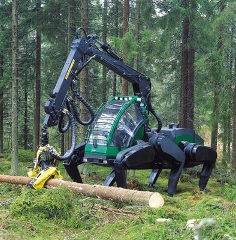

The history of the walking machine goes long before its rise in the public eye. In fact, the origins of this peculiar vehicle date from as early as 1962, when a US Army contract would requisition a machine on four legs.
The grant would fall into the hands of General Electric and a real life eccentric genius, Ralph Mosher. Through the 1950s, Mosher was a visionary in the field of industrial manipulators, having a long history of hydraulic arms and legs under his belt. His largest work yet had been an 18 foot tall “pedipulator”, a two-legged machine which was essentially a pair of stilts controlled by moving the user’s legs.
But while the pedipulator was little more than a showcase piece, the walking truck would be a fully operational vehicle. All four of the human limbs would be used for its four legs, providing haptic feedback to the operator that allowed them to “feel” the resistance when planting its feet on the ground.
The spectacular machine adorned advertisements with high promise, but GE’s selling of the walking truck would prove to be all talk. Many problems would still plague the experimental design. The walking process demanded so much fuel that tanks had to be stored separately and pumped to the truck through hoses. Building for the military contract went through, as it crawled at one-seventh their demanded speed. Worst of all, the machine was terribly exhausting to pilot over long periods, as operating the limbs with one’s arms and legs was tiring to the point many would feel drained after just fifteen minutes.
Though eventually mothballed, the walking truck would influence science fiction long after its end, with works by Syd Mead depicting quadruped machines stomping across forested terrain. One of these would end up on the desk of George Lucas, directly inspiring the walkers seen in Star Wars and becoming a founding landmark for the visualization of mecha.
The end of the original walking truck was far from the end for mounting vehicles on legs. Its limb-based controls, while ahead of their time, were ultimately deemed unviable, and so future attempts at making a walker were instead controlled with standard modes of input.
The next attempt by the US to make a walking vehicle would come in the 1980s, with Ohio State University’s six-legged contraption dubbed the Adaptive Suspension Vehicle. It was controlled with a simple joystick and designed as a cargo hauler, in the same manner as its predecessor, but its heavy machinery left it with little room for more carrying capacity.
Another hexapod would be prototyped by finnish John Deere subsidiary, Plustech, Their Timberjack would be designed as a tractor which could mount unstable terrain and cut down trees with an articulate crane arm. But, once again, the upsides of walking simply weren’t enough to justify switching from wheels.
One of the most recent developments in walking vehicles comes from a Hyundai proposal, dubbed Project Elevate in press releases. A hybrid vehicle which could lift its wheels up on legs, Elevate was referred to as a “global mobility vehicle” which could scale stairs and outcrops by raising and lowering its wheels. The concept was revealed in 2019 and a scale model was introduced in 2021 as the Tiger X-1, a suitcase-sized replica designed as a remotely controlled legged drone.
The fact that so many would strive for a legged vehicle, despite reaching technological dead ends each time, speaks to something more than just practical applications. Perhaps it comes from a desire to replicate forms in nature with artificial processes, or maybe even surpass them. Only time will tell if the most recent attempts will succeed in this pursuit.